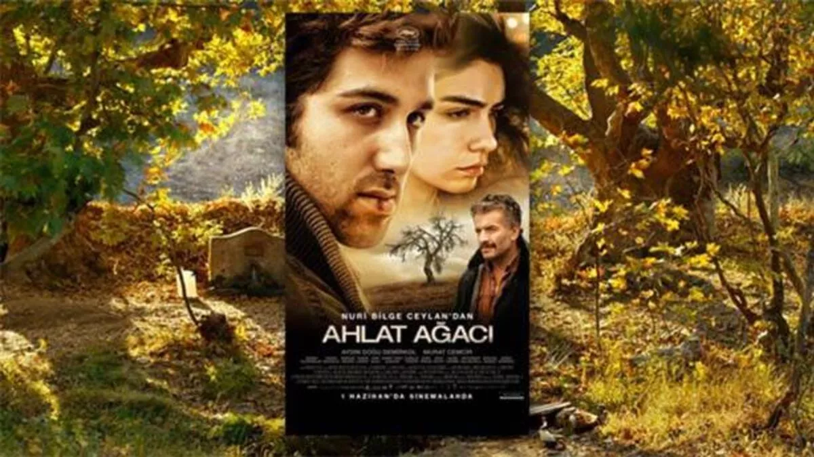

Merhaba ben Ahmet Uçar. Aydın'da yaşıyorum. Frontend Developer olmak istiyorum. Patika.Dev'de bildiklerimi tekrarlayarak daha önce öğrendiğim şeylerde uzmanlaşmak istiyorum.
Ahlat Ağacı
Nuri Bilge Ceylan bu filminde insan psikolojisinin derinlerinde ne tür bir varolma savaşı verdiği konusuna yakından bakıyor. Etkileyici bir film.